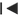
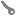

Timeline

The timeline is the main control for creating animations in Cheetah3D. If you can handle your DVD Player you should be also able to handle the Cheetah3D animation controls. Especially since many icons are the same as on your DVD player.
With Cheetah3D you can animate almost all object, tag and material properties. Only some parameters can't be animated, like the output resolution of an animation. But animating the resolution of a movie wouldn't make to much sense too.
Cheetah3D uses a technique called key framing to create animations. This means that you only record the object properties at positions where things actually change. Once you've recorded the object, tag or material properties a key will be created. With help of the keys you can see where you've recorded the properties. Between the keys Cheetah3D will interpolate the object properties.
This technique allows to create a hole animation by just recording the starting end the end points of an object.
Timeline Controls:
Now lets start with the 7 main parts of the timeline as shown on the screenshot above.
- The small icon block at the left of the timeline contains the most often used commands for creating a animation. You can also find all these commands in the "Animation" menu.
 Goto first frame of animation (beginning of the animation interval bar).
Goto first frame of animation (beginning of the animation interval bar). Goto former frame. Play OpenGL animation preview. Record current object settings. 
Goto next frame. 
Goto last frame of animation (end of the animation interval bar). - The blue rect shows a recorded key.
- This small orange handle shows the current animation time. Drag it to the left or to the right to change the current animation time.
- With the recording mask you can determine which parameters of a object should be recorded. By default only the position, scale and rotation of an object are recorded.
Record position parameter.Record scale parameter. Record rotation parameter. 
Record all parameters.  Enable Autokeying. If turned on Cheetah3D keys all parameters which change automatically. 
Record also all child objects of this object. 
Record only those parameters whose value did change
If you want to record just a single object parameter just make a right mouse click on the record button and chose the parameter from the context menu which you want to record.

- The current animation frame.
- The animation (preview) interval shows you the beginning and the end of the animation. If you want to change the interval in which the animation will be rendered/previewed just drag the beginning or the end of the scroller to the left or to the right.
Usage
To create an animation please follow these steps:
- First select the object, tag or material you want to animate.
- Set the current animation time to the time at which you want to record a key.
- Set the values of the object, tag or material properties.
- Click on the record icon to save the new key.
- Continue with 2. until you've recorded the hole animation.
Example
Check out the Hello world tutorial to see how to create a simple animation which just contains two keys. The starting and the ending position.